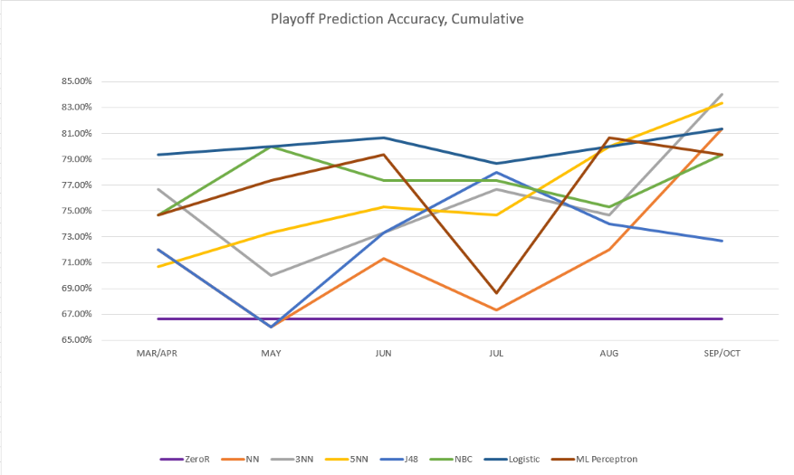
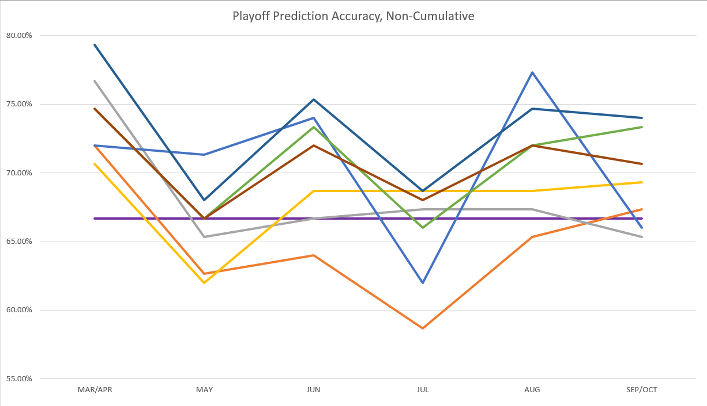

We compiled data on all MLB teams for each month of the regular season for the last five years. We decided not to go further than this because the playoff structure changed after the 2011 season and this would have skewed our data. We then tested many classifiers on the data we collected to view their accuracy in predicting whether teams will make the playoffs. As you will see, one graph has the statistics calculated for each month individually, whereas the other has the statistics calculated cumulatively up through each month.
 As you can see, logistic regression seems to outperform nearly all classifiers on most months for both cumulative and non-cumulative data. Additionally, all classifiers performed better on cumulative statistics, which intuitively makes sense.